7. 使用 C# 和 VS.NET 开发图形界面
7.1. 图形用户界面的基础
7.1.1. 第一个项目
让我们创建一个第一个“Windows应用程序”项目：
 |
- [1]：创建一个新项目
- [2]：选择“Windows 应用程序”类型
- [3]：目前项目名称并不重要
- [4]：项目已创建
 |
- [5]：保存当前解决方案
- [6]：项目名称
- [7]: 解决方案文件
- [8]: 解决方案名称
- [9]：将为 [Chap5] 解决方案创建一个文件夹。其项目将位于子文件夹中。
 |
- [10]: 解决方案 [Chap5] 中的项目 [01]：
- [Program.cs] 是该项目的主类
- [Form1.cs] 是管理窗口行为的源文件 [11]
- [Form1.Designer.cs] 是封装窗口组件信息的源文件 [11]
- [11]：设计模式下的文件 [Form1.cs]
- [12]：生成的应用程序可通过 (Ctrl-F5) 运行。此时将显示 [Form1] 窗口，该窗口可移动、调整大小及关闭。图形窗口的基本元素现已可用。
主类 [Program.cs] 如下所示：
using System;
using System.Windows.Forms;
namespace Chap5 {
static class Program {
/// <summary>
/// The main entry point for the application.
/// </summary>
[STAThread]
static void Main() {
Application.EnableVisualStyles();
Application.SetCompatibleTextRenderingDefault(false);
Application.Run(new Form1());
}
}
}
- 第 2 行：使用窗体的应用程序使用 System.Windows.Forms 命名空间。
- 第 4 行：原始命名空间已重命名为 Chap5。
- 第 10 行：运行项目（Ctrl-F5）时，将执行 [Main] 方法。
- 第 11-13 行：Application 类属于 System.Windows.Forms 命名空间。它包含用于启动和停止 Windows 图形应用程序的静态方法。
- 第 11 行：可选 - 允许为窗体上的控件设置不同的视觉样式
- 第 12 行：可选 - 设置控件文本的渲染引擎：GDI+（true），GDI（false）
- 第 13 行：[Main] 方法中唯一关键的一行：实例化 [Form1] 类（即窗体类），并指示其运行。
源文件 [Form1.cs] 如下：
using System;
using System.Windows.Forms;
namespace Chap5 {
public partial class Form1 : Form {
public Form1() {
InitializeComponent();
}
}
}
- 第 5 行：Form1 类继承自 [System.Windows.Forms.Form] 类，该类是所有窗口的基类。关键字 partial 表示该类是部分类，可由其他源文件进行补充。本例中正是如此，Form1 类被拆分为两个文件：
- [Form1.cs]：包含窗体的行为逻辑，包括其事件处理程序
- [Form1.Designer.cs]：包含窗体控件及其属性。当用户在 [设计] 模式下修改窗口时，该文件会重新生成。
- 第 6-8 行：Form1 类的构造函数
- 第 7 行：调用 InitializeComponent 方法。该方法并不存在于 [Form1.cs] 中，而位于 [Form1.Designer.cs] 中。
源文件 [Form1.Designer.cs] 内容如下：
namespace Chap5 {
partial class Form1 {
// <summary>
// Required designer variable.
// </summary>
private System.ComponentModel.IContainer components = null;
//tax <summary>
//tax Clean up any resources being used.
//tax </summary>
//tax <param name="disposing">true if managed resources should be disposed; otherwise, false.</param>
protected override void Dispose(bool disposing) {
if (disposing && (components != null)) {
components.Dispose();
}
base.Dispose(disposing);
}
#region Windows Form Designer generated code
//tax <summary>
//a IImpot object Required method for Designer support - do not modify
//Tax the contents of this method with the code editor.
/// </summary>
private void InitializeComponent() {
this.SuspendLayout();
///
///
///
this.AutoScaleDimensions = new System.Drawing.SizeF(6F, 13F);
this.AutoScaleMode = System.Windows.Forms.AutoScaleMode.Font;
this.ClientSize = new System.Drawing.Size(196, 98);
this.Name = "Form1";
this.Text = "Form1";
this.ResumeLayout(false);
}
#endregion
}
}
- 第 2 行：类名始终为 Form1。请注意，不再需要重复声明它继承自 Form。
- 第 25-37 行：由 [Form1] 类构造函数调用的 InitializeComponent 方法。该方法负责创建并初始化所有窗体组件。每次在 [设计] 模式下修改窗体时，该方法都会被重新生成。第 19-39 行创建了一个名为 region 的区域来对其进行分隔。开发者切勿在此区域内添加任何代码：下次重新生成时，该区域的内容将被覆盖。
起初，忽略 [Form1.Designer.cs] 中的代码会更简单。该代码是自动生成的，是将开发人员在 [设计] 模式下所做的选择转换为 C# 语言的结果。让我们来看一个简单的示例：
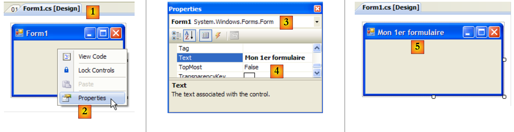 |
- [1]：双击文件 [Form1.cs] 进入 [设计] 模式
- [2]：右键单击窗体并选择 [属性]
- [3]：[Form1] 属性窗口
- [4]：[Text] 属性表示窗口标题
- [5]：[Text] 属性的更改在 [设计] 模式以及 [Form1.Designer.cs] 源代码中均会被考虑：
private void InitializeComponent() {
this.SuspendLayout();
...
this.Text = "Mon 1er formulaire";
...
}
7.1.2. 第二个项目
7.1.2.1. 表单
我们将启动一个名为 02 的新项目。为此，我们将遵循上述创建项目的步骤。将要创建的窗口如下所示：
 |
表单组件如下：
编号 | 名称 | 类型 | 角色 |
1 | 标签输入 | 标签 | 输入内容 |
2 | 文本框输入 | 文本框 | 一个输入框 |
3 | 显示按钮 | 按钮 | 用于在对话框中显示 textBoxSaisie 输入字段的内容 |
要构建此窗口，请按以下步骤操作：
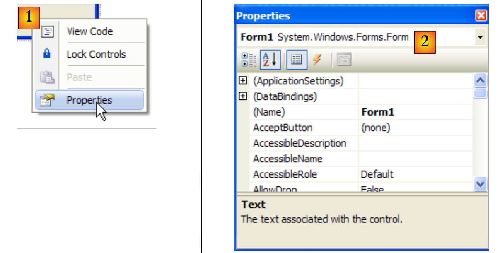 |
- [1]：在表单上任意组件外部右键单击，然后选择 [属性] 选项
- [2]：窗口属性表将显示在 Visual Studio 界面的右下角
窗体属性包括：
用于设置窗口背景色 | |
用于设置窗口中图形或文本的颜色 | |
用于将菜单与窗口关联 | |
为窗口设置标题 | |
用于设置窗口类型 | |
用于设置在 | |
用于设置窗口名称 |
在此，我们设置了 Text 和 Name 属性：
输入框和按钮 - 1 | |
frmSaisiesBoutons |
 |
- [1]：从 Visual Studio 中可用的工具箱中选择 [通用控件] 工具箱
- [2, 3, 4]：依次双击 [Label]、[Button] 和 [TextBox] 控件
- [5]：这三个组件已添加到窗体上
要正确对齐和调整组件大小，您可以使用工具栏中的以下项目：
 | 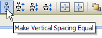 | ||||||||
格式设置的原理如下：
- 选择需要一起格式化的组件（按住 Ctrl 键并单击以选择组件）
- 选择所需的格式类型：
- （续）
- “对齐”选项允许将组件对齐到顶部、底部、左侧、右侧、居中等
- “统一尺寸”选项可使组件具有相同的高度或宽度
- “水平间距”选项可将组件水平对齐，且组件间距保持相同宽度。“垂直间距”选项同样适用于垂直对齐。
- “居中”选项可将组件水平（Horizontally）或垂直（Vertically）居中对齐在
放置组件后，我们需要设置其属性。操作方法是右键单击组件，然后选择“属性”选项：
 |
- [1]：选择该组件以打开其属性窗口。在此窗口中，修改以下属性：名称：labelSaisie，文本：Input
- [2]：按相同方式操作：名称：textBoxSaisie，文本：留空
- [3] : 名称：buttonAfficher，文本：View
- [4]：窗口本身：名称：frmSaisiesBoutons，文本：输入框与按钮 - 1
- [5]：运行（Ctrl-F5）该项目，以初步查看窗口的运行效果。
在 [设计] 模式下所做的操作已转换为 [Form1.Designer.cs] 代码：
namespace Chap5 {
partial class frmSaisiesBoutons {
...
private System.ComponentModel.IContainer components = null;
...
private void InitializeComponent() {
this.labelSaisie = new System.Windows.Forms.Label();
this.buttonAfficher = new System.Windows.Forms.Button();
this.textBoxSaisie = new System.Windows.Forms.TextBox();
this.SuspendLayout();
///
///
///
this.labelSaisie.AutoSize = true;
this.labelSaisie.Location = new System.Drawing.Point(12, 19);
this.labelSaisie.Name = "labelSaisie";
this.labelSaisie.Size = new System.Drawing.Size(35, 13);
this.labelSaisie.TabIndex = 0;
this.labelSaisie.Text = "Saisie";
///
///
///
this.buttonAfficher.Location = new System.Drawing.Point(80, 49);
this.buttonAfficher.Name = "buttonAfficher";
this.buttonAfficher.Size = new System.Drawing.Size(75, 23);
this.buttonAfficher.TabIndex = 1;
this.buttonAfficher.Text = "Afficher";
this.buttonAfficher.UseVisualStyleBackColor = true;
this.buttonAfficher.Click += new System.EventHandler(this.buttonAfficher_Click);
///
// Form1
// labelSaisie
this.textBoxSaisie.Location = new System.Drawing.Point(80, 19);
this.textBoxSaisie.Name = "textBoxSaisie";
this.textBoxSaisie.Size = new System.Drawing.Size(100, 20);
this.textBoxSaisie.TabIndex = 2;
// buttonAfficher
// textBoxSaisie
// frmSaisiesBoutons
this.AutoScaleDimensions = new System.Drawing.SizeF(6F, 13F);
this.AutoScaleMode = System.Windows.Forms.AutoScaleMode.Font;
this.ClientSize = new System.Drawing.Size(292, 118);
this.Controls.Add(this.textBoxSaisie);
this.Controls.Add(this.buttonAfficher);
this.Controls.Add(this.labelSaisie);
this.Name = "frmSaisiesBoutons";
this.Text = "Saisies et boutons - 1";
this.ResumeLayout(false);
this.PerformLayout();
}
private System.Windows.Forms.Label labelSaisie;
private System.Windows.Forms.Button buttonAfficher;
private System.Windows.Forms.TextBox textBoxSaisie;
}
}
- 第 53-55 行：这三个控件在 [Form1] 类中生成了三个私有字段。请注意，这些字段的名称即是在 [设计] 模式下赋予控件的名称。第 2 行（即类本身）的情况也是如此。
- 第 7-9 行：创建了三个类型分别为 [Label]、[TextBox] 和 [Button] 的对象。这些对象用于管理视觉组件。
- 第 14-19 行：labelSaisie 标签的配置
- 第 23-29 行：按钮配置 buttonAfficher
- 第 33-36 行：输入框配置 textBoxSaisie
- 第 40-47 行：表单配置 frmSaisiesBoutons。第 43-45 行展示了如何将组件添加到表单中。
这段代码通俗易懂。因此，无需使用 [设计] 模式，即可通过代码构建窗体。MSDN Visual Studio 文档中提供了大量相关示例。掌握这段代码后，您便可以在运行时创建窗体：例如，在运行时动态创建一个窗体来更新数据库表，而该表的结构仅在运行时才被识别。
剩下的就是编写处理“视图”按钮点击事件的程序了。选中该按钮以打开其属性窗口。该窗口包含多个选项卡：
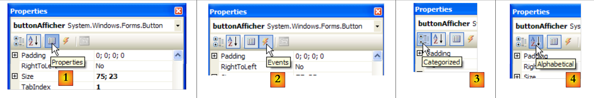 |
- [1]：按字母顺序排列的属性列表
- [2]：控件事件
可以通过类别或按字母顺序访问控件属性与事件：
- [3]: 按类别排列的属性或事件
- [4]: 按字母顺序排列的属性或事件
buttonAfficher 的“按类别分类的事件”如下：
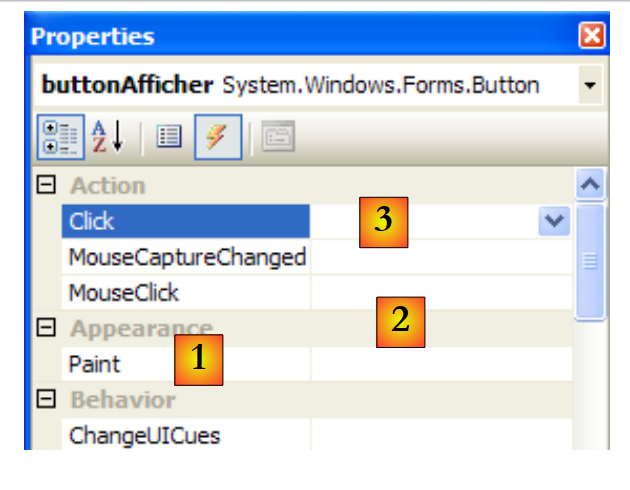 |
- [1]：窗口左侧列出了该按钮可能发生的事件。点击按钮对应“Click”事件。
- [2]：右侧栏显示在相应事件发生时调用的过程名称。
- [3]: 若双击事件单元格“Click”，系统将自动切换至代码窗口，以便编写事件处理程序 Click button buttonAfficher :
using System;
using System.Windows.Forms;
namespace Chap5 {
public partial class frmSaisiesBoutons : Form {
public frmSaisiesBoutons() {
InitializeComponent();
}
private void buttonAfficher_Click(object sender, EventArgs e) {
}
}
}
- 第 10-12 行：事件处理程序的骨架。点击名为 buttonAfficher 的按钮。请注意以下几点：
- 方法的命名格式为 eventName_ComponentName
- 该方法为私有方法。它接收两个参数：
- sender：是触发该事件的对象。如果该过程是在点击 buttonAfficher 后执行的，则 sender 将等于 buttonAfficher。也可以设想 buttonAfficher_Click 是由另一个过程调用的。在这种情况下，该过程可以自由地设置其选择的 sender 对象。
- EventArgs：一个包含事件信息的对象。对于 Click 事件，它不包含任何内容。对于鼠标移动事件，它将包含鼠标的 (X,Y) 坐标。
- 我们在此处不会使用这些参数。
编写事件处理程序需要完善之前的代码框架。在Ici中，我们希望在textBoxSaisie不为空时显示其内容[1]，否则显示错误信息[2]：
 |
实现此功能的代码如下：
private void buttonAfficher_Click(object sender, EventArgs e) {
// displays the text entered in the TextBox textboxSaisie
string texte = textBoxSaisie.Text.Trim();
if (texte.Length != 0) {
MessageBox.Show("Texte saisi= " + texte, "Vérification de la saisie", MessageBoxButtons.OK, MessageBoxIcon.Information);
} else {
MessageBox.Show("Saissez un texte...", "Vérification de la saisie", MessageBoxButtons.OK, MessageBoxIcon.Error);
}
MessageBox 类用于在窗口中显示消息。这里我们使用了 Show 方法：
public static DialogResult Show(string text, string caption, MessageBoxButtons buttons, MessageBoxIcon icon);
使用
要显示的消息 | |
窗口标题 | |
窗口中的按钮 | |
窗口中的图标 |
这些按钮的值可以取自上文中的以下常量（如第 7 行所示，前缀为 MessageBoxButtons）：
按钮 | |
 | |
 | |
 | |
 | |
 | |
 |
该图标的值可以取自上文中的以下常量（如第 10 行所示，这些常量前缀为 MessageBoxIcon）：
 | 同上 停止 | ||
同上 警告 | 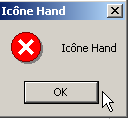 | ||
同上 星号 |  | ||
 | 同上 手 | ||
 |
Show 方法是一个静态方法，它返回类型为 [System.Windows.Forms.DialogResult] 的结果，该类型是一个枚举：

要判断用户按下了哪个按钮来关闭 MessageBox，我们编写如下代码：
7.1.2.2. 事件处理代码
除了我们编写的 buttonAfficher_Click 事件外，Visual Studio 还在 [Form1.Designer.cs] 文件的 InitializeComponents 方法中（该方法用于创建和初始化窗体组件）生成了以下代码行：
this.buttonAfficher.Click += new System.EventHandler(this.buttonAfficher_Click);
Click 是 Button 类的事件 [1, 2, 3]：
 |
- [5]：事件 [Control.Click] 的声明 [4]。这表明 Click 事件并非 [Button] 类的专属事件。它属于 [Control] 类，即 [Button] 类的父类。
- EventHandler 是名为“委托”的方法的原型（模型）。我们稍后会再讨论这一点。
- event 是一个关键字，用于限制委托 EventHandler 的功能：作为对象的委托比 event 具有更丰富的功能。
请参阅委托 EventHandler 的定义如下：
 |
访问委托 EventHandler 指定了一个方法模型：
- 其第一个参数为 Object 类型
- 其第二个参数为 EventArgs
- 且不返回任何结果
Visual Studio 生成的用于管理 buttonAfficher 点击事件的方法即属于此类情况：
private void buttonAfficher_Click(object sender, EventArgs e);
buttonAfficher_Click 对应于 EventHandler 定义的原型。要创建一个 EventHandler，请按以下步骤操作：
EventHandler evtHandler=new EventHandler(méthode correspondant au prototype défini par le type EventHandler);
由于 buttonAfficher_Click 对应于 EventHandler 定义的原型，我们可以编写：
实际上，委托类型的变量是一组指向方法的引用列表，就像委托本身一样。要将新方法 M 添加到上面的变量 evtHandler 中，我们使用以下语法：
即使 evtHandler 是一个空列表，也可以使用 += 语法。
让我们回到 [InitializeComponent] 中的那行代码，该代码向事件 Click 的对象 buttonAfficher 添加了一个事件处理程序：
this.buttonAfficher.Click += new System.EventHandler(this.buttonAfficher_Click);
这条语句将一个 EventHandler 添加到了 buttonAfficher.Click 方法列表中。每当检测到 buttonAfficher 组件被点击时，这些方法都会被调用。通常只有一个，它被称为“事件处理程序”。
让我们回到 EventHandler 的签名：
private delegate void EventHandler(object sender, EventArgs e);
该委托的第二个参数是 EventArgs 类型或其派生类的对象。EventArgs 类型非常通用，实际上并未提供关于已发生事件的任何具体信息。对于按钮点击事件，这已足够。而对于窗体上的鼠标移动事件，我们会使用由以下代码定义的 [Form] 类中的 MouseMove 事件：
访问委托 MouseEventHandler 的定义如下：
 |
这是一个委托签名函数 void f (object, MouseEventArgs)。类 MouseEventArgs 的定义如下：
 |
MouseEventArgs 类比 EventArgs 类功能更丰富。例如，我们可以获取事件发生时鼠标的 X 和 Y 坐标。
7.1.2.3. 结论
通过研究这两个项目，我们可以得出结论：一旦使用 Visual Studio 构建了 GUI，开发人员的主要工作就是编写希望为该 GUI 管理的事件处理程序。代码由 Visual Studio 自动生成。这些代码可能比较复杂，起初可以忽略不计。不过，稍后对其进行研究，可能会帮助我们更好地理解如何创建和管理窗体。
7.2. 基本组件
接下来，我们将介绍若干使用最常见组件的应用程序，以便了解这些组件的主要方法和属性。对于每个应用程序，我们将展示其图形界面以及关键代码，主要是事件处理程序的代码。
7.2.1. 窗体 Form
我们将首先介绍一个关键组件——表单，您可以在其中放置其他组件。我们之前已经介绍过表单的一些基本属性。现在，我们将重点介绍表单中几个最重要的事件。
表单正在加载 | |
表单正在关闭 | |
表单已关闭 |
Load 事件发生在表单显示之前。Closing 事件发生在表单正在关闭时。也可以通过编程来阻止此关闭操作。
我们创建一个名为 Form1 的表单，其中不包含任何控件：
 |
- [1]：表单
- [2]：涉及的三个事件
[Form1.cs] 的代码如下：
using System;
using System.Windows.Forms;
namespace Chap5 {
public partial class Form1 : Form {
public Form1() {
InitializeComponent();
}
private void Form1_Load(object sender, EventArgs e) {
// initial form loading
MessageBox.Show("Evt Load", "Load");
}
private void Form1_FormClosing(object sender, FormClosingEventArgs e) {
// the form is closing
MessageBox.Show("Evt FormClosing", "FormClosing");
// confirmation requested
DialogResult réponse = MessageBox.Show("Voulez-vous vraiment quitter l'application", "Closing", MessageBoxButtons.YesNo, MessageBoxIcon.Question);
if (réponse == DialogResult.No)
e.Cancel = true;
}
private void Form1_FormClosed(object sender, FormClosedEventArgs e) {
// the form will be closed
MessageBox.Show("Evt FormClosed", "FormClosed");
}
}
}
我们使用 MessageBox 来接收事件通知。
第 10 行：当 应用程序加载时，甚至在窗体显示之前： |  |
第 15 行：当 用户关闭窗口时触发。 |  |
第 19 行：然后我们会询问用户是否真的要退出 ： |  |
第 20 行：如果他回答“否”，我们将方法接收到的事件 CancelEventArgs e 的 Cancel 属性 方法通过 参数中接收的CancelEventArgs事件上。如果将该属性设置为False，则 将中止，否则将继续执行。随后将触发 FormClosed 事件将随后触发： |  |
7.2.2. Label 标签和 TextBox 输入框
我们已经接触过这两个控件。Label 是一个文本控件，TextBox 是一个输入框控件。它们的主要属性是 Text，该属性指定输入框的内容或标签的文本。该属性支持读写操作。
TextBox 通常使用的事件是 TextChanged，该事件表示用户已修改了输入框。以下是一个使用 TextChanged 事件来跟踪输入框变化的示例：
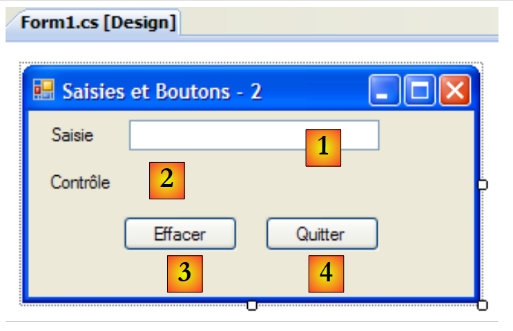 |
编号 | 类型 | 名称 | 角色 |
1 | 文本框 | textBoxSaisie | 输入字段 |
2 | 标签 | labelControle | 实时显示来自 1 的文本 AutoSize=False, Text=(rien) |
3 | 按钮 | buttonEffacer | 用于删除字段 1 和 2 |
4 | 按钮 | buttonQuitter | 用于退出应用程序 |
该应用程序的代码如下：
using System.Windows.Forms;
namespace Chap5 {
public partial class Form1 : Form {
public Form1() {
InitializeComponent();
}
private void textBoxSaisie_TextChanged(object sender, System.EventArgs e) {
// the content of TextBox has changed - copy it to Label labelControle
labelControle.Text = textBoxSaisie.Text;
}
private void buttonEffacer_Click(object sender, System.EventArgs e) {
// delete the contents of the input box
textBoxSaisie.Text = "";
}
private void buttonQuitter_Click(object sender, System.EventArgs e) {
// click on the Quit button - exit the application
Application.Exit();
}
private void Form1_Shown(object sender, System.EventArgs e) {
// focus on the input field
textBoxSaisie.Focus();
}
}
}
- 第 24 行：当表单显示时，[Form].Shown 事件会被触发
- 第 26 行：焦点（用于输入）被置于 textBoxSaisie 组件上。
- 第 9 行：每当 [TextBox] 组件的内容发生变化时，[TextBox].TextChanged 事件就会触发
- 第 11 行：将 [TextBox] 组件的内容复制到 [Label] 组件
- 第 14 行：处理 [Delete] 按钮的点击事件
- 第 16 行：将空字符串放入 [TextBox] 组件
- 第 19 行：处理 [Quit] 按钮的点击事件
- 第 21 行：停止正在运行的应用程序。请记住，Application 对象用于在 [Form1.cs] 的 [Main] 方法中启动应用程序：
static void Main() {
Application.EnableVisualStyles();
Application.SetCompatibleTextRenderingDefault(false);
Application.Run(new Form1());
}
以下示例使用多行 TextBox：
 |
控件列表如下：
编号 | 类型 | 名称 | 作用 |
1 | 文本框 | textBoxLignes | 多行输入框 多行=true，滚动条=两端，接受回车=true，接受Tab键=true |
2 | TextBox | textBoxLigne | 单行输入框 |
3 | 按钮 | buttonAjouter | 将第2项的内容添加到第1项 |
要使 TextBox 支持多行输入，请设置以下控件属性：
以支持多行文本 | |
用于指定控件是否显示滚动条（水平、垂直、两边）或不显示（无） | |
如果为 true，按 Enter 键将跳转到该行 | |
如果为真，Tab键将在文本中生成一个制表符 |
该应用程序允许直接在 [1] 中输入行，或通过 [2] 和 [3] 添加行。
应用程序代码如下：
using System.Windows.Forms;
using System;
namespace Chap5 {
public partial class Form1 : Form {
public Form1() {
InitializeComponent();
}
private void buttonAjouter_Click(object sender, System.EventArgs e) {
// add the content of textBoxLigne to that of textBoxLignes
textBoxLignes.Text += textBoxLigne.Text+Environment.NewLine;
textBoxLigne.Text = "";
}
private void Form1_Shown(object sender, EventArgs e) {
// focus on the input field
textBoxLigne.Focus();
}
}
}
- 第 18 行：当表单显示时（Shown 事件），将焦点置于输入字段 textBoxLigne
- 第 10 行：处理 [添加] 按钮的点击事件
- 第 12 行：将文本输入框 textBoxLigne 的内容追加到文本输入框 textBoxLignes 的文本中，并添加换行符。
- 第 13 行：清空输入字段 textBoxLigne
7.2.3. 下拉列表 ComboBox
我们创建以下表单：
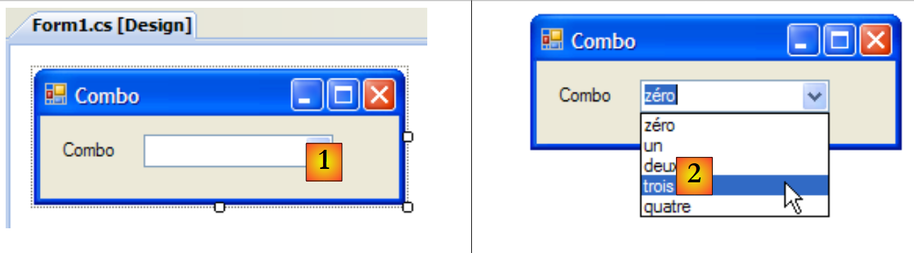 |
编号 | 类型 | 名称 | 角色 |
1 | 下拉列表 | comboNombres | 包含字符串 下拉列表样式=下拉列表 |
ComboBox 组件是一个带有输入字段的下拉列表：用户既可以在 (2) 中选择项目，也可以在 (1) 中输入文本。ComboBox 有三种类型，由 DropDownStyle 属性设定：
带编辑区的非下拉列表 | |
带编辑区的下拉列表 | |
不带编辑区的下拉列表 |
默认情况下，ComboBox 的类型为 DropDown。
将 ComboBox 类归属于单一制造商：
将创建一个空的下拉列表 |
ComboBox 的元素可通过 Items 属性访问：
这是一个带索引的属性，Items[i] 表示 ComboBox 的第 i 个元素。该属性为只读。
或者，C 是一个下拉列表，C.Items 是其元素列表。我们有以下属性：
下拉列表中的元素数量 | |
下拉列表中的第 i 个元素 | |
将对象 o 作为组合框的最后一个元素添加 | |
将一个对象数组添加到下拉列表的末尾 | |
将对象 o 添加到下拉列表的第 i 个位置 | |
从下拉列表中移除第 i 个元素 | |
从下拉列表中移除对象 o | |
清空下拉列表中的所有元素 | |
返回对象 o 在下拉列表中的第 i 个位置 | |
所选项的索引 | |
选中的项目 | |
所选项目的显示文本 | |
所选项目的显示文本 |
令人惊讶的是，下拉列表虽然在视觉上显示的是字符串，但实际上可以包含对象。如果 ComboBox 包含一个对象 obj，它将显示字符串 obj.ToString()。请记住，每个对象都继承了 object 类的 ToString 方法，该方法会生成一个“代表”该对象的字符串。
下拉列表 C 中选中的项可通过 C.SelectedItem 或 C.Items[C.SelectedIndex] 获取，其中 C.SelectedIndex 是所选元素的索引号，从第一个元素开始计数为 0。选中的文本可通过多种方式获取：C.SelectedItem.Text、C.Text
当从下拉列表中选中一个项目时，会触发 SelectedIndexChanged 事件，该事件可用于通知用户组合框中的选择已发生变化。在下面的应用程序中，我们利用此事件来显示列表中已选中的项目。
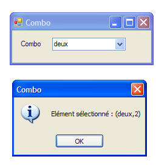 |
应用程序代码如下：
using System.Windows.Forms;
namespace Chap5 {
public partial class Form1 : Form {
private int previousSelectedIndex=0;
public Form1() {
InitializeComponent();
// combo filling
comboBoxNombres.Items.AddRange(new string[] { "zéro", "un", "deux", "trois", "quatre" });
// select item no. 0
comboBoxNombres.SelectedIndex = 0;
}
private void comboBoxNombres_SelectedIndexChanged(object sender, System.EventArgs e) {
int newSelectedIndex = comboBoxNombres.SelectedIndex;
if (newSelectedIndex != previousSelectedIndex) {
// the selected item has changed - it is displayed
MessageBox.Show(string.Format("Elément sélectionné : ({0},{1})", comboBoxNombres.Text, newSelectedIndex), "Combo", MessageBoxButtons.OK, MessageBoxIcon.Information);
// note the new index
previousSelectedIndex = newSelectedIndex;
}
}
}
}
- 第 5 行：previousSelectedIndex 存储下拉列表中上次选中的索引
- 第 10 行：用字符串数组填充下拉列表
- 第 12 行：选中第一个项目
- 第 15 行：该方法在用户每次从下拉列表中选择项目时执行。与名称可能暗示的不同，即使所选项目与上一次相同，该事件仍会触发。
- 第 16 行：记录所选元素的索引
- 第 17 行：如果与上述索引不同
- 第 19 行：显示所选项的编号和文本
- 第 21 行：记录新索引
7.2.4. 组件 ListBox
我们建议构建以下界面：
 |
该窗口的组件如下：
编号 | 类型 | 名称 | 作用/属性 |
0 | 表单 | Form1 | 表单 FormBorderStyle=FixedSingle（不可调整大小的边框） |
1 | 文本框 | 文本输入框 | 输入框 |
2 | 按钮 | buttonAjouter | 用于将输入字段 [1] 的内容添加到列表 [3] 中的按钮 |
3 | 列表框 | listBox1 | 列表 1 SelectionMode=MultiExtended : |
4 | 列表框 | listBox2 | 列表 2 选择模式=多选简易 : |
5 | 按钮 | button1to2 | 将列表 1 中选中的项目转移到列表 2 |
6 | 按钮 | button2to1 | 执行相反操作 |
7 | 按钮 | buttonEffacer1 | 清空列表 1 |
8 | 按钮 | buttonEffacer2 | 清空列表 2 |
ListBox 组件的元素具有一种选择模式，该模式由其 SelectionMode 属性定义：
只能选择一个项目 | |
支持多选：按住 SHIFT 键并单击一个元素，可将选区从先前选中的元素扩展至当前元素。 | |
支持多选：通过鼠标点击或按空格键可选中或取消选中一个元素。 |
- 用户在字段 1 中输入文本，并使用“添加”（2）将其添加到列表 1 中。然后，输入字段（1）被清空，用户可以添加一个新元素。
- 用户可以在一个列表中选择要转移的项目，然后选择相应的转移按钮 5 或 6，将项目从一个列表转移到另一个列表。转移的项目将添加到目标列表的末尾，并从源列表中删除。
- 用户可以双击列表 1 中的项目。该项目随后会被转移到编辑框中，并从列表 1 中移除。
按钮的启用或禁用遵循以下规则：
- “添加”按钮仅在输入框中存在非空文本时点亮
- 仅当列表 1 中选中了某项时，用于将列表 1 转移到列表 2 的按钮 [5] 才会亮起
- 用于将列表 2 转移到列表 1 的按钮 [6] 仅在列表 2 中选中了某项时才会亮起
- 用于删除列表 1 和列表 2 的按钮 [7] 和 [8] 仅在待删除的列表中包含项目时才会点亮。
在上述条件下，应用程序启动时所有按钮必须处于关闭状态。这需要将“启用”按钮的值设置为 false。此操作可在设计阶段完成，系统会自动在 InitializeComponent 中生成相应代码；或者如下所示，在代码编辑器中手动实现：
public Form1() {
InitializeComponent();
// --- initialisations complémentaires ---
// on inhibe un certain nombre de boutons
buttonAjouter.Enabled = false;
button1vers2.Enabled = false;
button2vers1.Enabled = false;
buttonEffacer1.Enabled = false;
buttonEffacer2.Enabled = false;
}
“添加”按钮的状态由输入字段的内容控制。这是 TextChanged 事件，它允许我们跟踪该内容的更改：
private void textBoxSaisie_TextChanged(object sender, System.EventArgs e) {
// the content of textBoxSaisie has changed
// the Add button is only lit if the entry is non-empty
buttonAjouter.Enabled = textBoxSaisie.Text.Trim() != "";
}
传输按钮的状态取决于其所控制的列表中是否已选中某项：
private void listBox1_SelectedIndexChanged(object sender, System.EventArgs e) {
// an item has been selected
// switch on the 1 to 2 transfer button
button1vers2.Enabled = true;
}
private void listBox2_SelectedIndexChanged(object sender, System.EventArgs e) {
// an item has been selected
// switch on the 2 to 1 transfer button
button2vers1.Enabled = true;
}
点击“添加”按钮相关的代码如下：
private void buttonAjouter_Click(object sender, System.EventArgs e) {
// add a new element to list 1
listBox1.Items.Add(textBoxSaisie.Text.Trim());
// raz de la saisie
textBoxSaisie.Text = "";
// List 1 is not empty
buttonEffacer1.Enabled = true;
// return focus to input box
textBoxSaisie.Focus();
}
请注意 Focus 方法用于将焦点置于表单控件上。与“删除”按钮点击相关的代码如下：
private void buttonEffacer1_Click(object sender, System.EventArgs e) {
// delete list 1
listBox1.Items.Clear();
// delete button
buttonEffacer1.Enabled = false;
}
private void buttonEffacer2_Click(object sender, System.EventArgs e) {
// delete list 2
listBox2.Items.Clear();
// delete button
buttonEffacer2.Enabled = false;
}
将选中项从一个列表转移到另一个列表的代码：
private void button1vers2_Click(object sender, System.EventArgs e) {
// transfer the item selected in List 1 to List 2
transfert(listBox1, button1vers2, buttonEffacer1, listBox2, button2vers1, buttonEffacer2);
}
private void button2vers1_Click(object sender, System.EventArgs e) {
// transfer the item selected in List 2 to List 1
transfert(listBox2, button2vers1, buttonEffacer2, listBox1, button1vers2, buttonEffacer1);
}
上述两个方法将选中项从一个列表转移到另一个列表的任务委托给了一个名为 transfer 的私有方法：
// transfer
private void transfert(ListBox l1, Button button1vers2, Button buttonEffacer1, ListBox l2, Button button2vers1, Button buttonEffacer2) {
// transfer selected items from list l1 to list l2
for (int i = l1.SelectedIndices.Count - 1; i >= 0; i--) {
// index of selected item
int index = l1.SelectedIndices[i];
// addition to l2
l2.Items.Add(l1.Items[index]);
// deletion in l1
l1.Items.RemoveAt(index);
}
// delete buttons
buttonEffacer2.Enabled = l2.Items.Count != 0;
buttonEffacer1.Enabled = l1.Items.Count != 0;
// transfer buttons
button1vers2.Enabled = false;
}
- 第 b 行：transfer 方法接收六个参数：
- 对包含所选项的列表 l1 的引用。运行应用程序时，l1 可能是 listBox1 或 listBox2。调用示例见 transfer 过程 buttonXversY_Click 的第 3 行和第 8 行。
- 指向与列表 l1 关联的转移按钮的引用。例如，如果 l1 是 listBox2，则该引用为 button2to1（参见第 8 行调用）
- 指向列表 l1 的删除按钮的引用。例如，如果 l1 是 listBox1，则为 buttonEffacer1（参见第 3 行调用）
- 其余三个引用类似，但指向 l2。
- d 行：[ListBox] 集合。SelectedIndices 表示在 [ListBox] 组件中选中元素的索引。这是一个：
- [ListBox].SelectedIndices.Count 是该集合中的项目数量
- [ListBox].SelectedIndices[i] 是该集合中的第 i 个项目
我们将以逆序遍历该集合，从末尾开始，到开头结束。稍后会解释原因。
- 第 f 行：列表 l1 中所选项的索引
- 行 h：将该项添加到列表 l2 中
- 第 j 行：并从列表 l1 中删除。由于已被删除，它不再被选中。第 d 行的集合 l1.SelectedIndices 将被重新计算。它将丢失刚刚删除的元素。所有后续元素的编号将从 n 变为 n-1。
- 如果第 (d) 行中的循环是递增的，且刚刚处理完编号为 0 的元素，那么它接下来将处理编号为 1 的元素。或者，在删除编号为 0 的元素之前，原本编号为 1 的元素，此时将变为编号为 0。随后它将被循环忽略。
- 如果第 (d) 行的循环是递减的，且刚处理完第 n 号元素，则接下来将处理第 n-1 号元素。删除第 n 号元素后，第 n-1 号元素的编号不会改变。因此，它将在下一次循环中被处理。
- 第 m-n 行：[删除] 按钮的状态取决于相关列表中是否存在项目
- 第 p 行：列表 l2 已无选中项：关闭其传输按钮。
7.2.5. 复选框 CheckBox，单选按钮 ButtonRadio
我们建议编写以下应用程序：
 |
窗口组件如下：
编号 | 类型 | 名称 | 作用 |
1 | 组框 cf [6] | groupBox1 | 一个组件容器。其他组件可以拖放进去。 文本=单选按钮 |
2 | 单选按钮 | radioButton1 radioButton2 radioButton3 | 3 个单选按钮 - radioButton1 的 Checked 属性为 True，Text 属性为 1 - radioButton2 的 Text 属性为 2 - radioButton3 的 Text 属性为 3 位于同一容器（此处为 GroupBox）中的单选按钮彼此互斥：仅有一个处于选中状态。 |
3 | GroupBox | groupBox2 | |
4 | 复选框 | 复选框1 复选框2 复选框3 | 3 个复选框。复选框1 的 Checked 属性为 True，Text 属性为 A；复选框2 的 Text 属性为 B；复选框3 的 Text 属性为 C |
5 | 下拉列表 | listBoxValeurs | 一个列表，在发生任何变化时显示单选按钮和复选框的值。 |
6 | 显示了容器 GroupBox 的位置 |
这六个控件中值得关注的事件是 CheckChanged，它表示复选框或单选按钮的状态发生了变化。在这两种情况下，该状态都由布尔属性 Checked 表示，其真实含义是控件已被选中。我们将仅使用一个方法来处理这六个 CheckChanged 事件，即 poster 方法。为了确保这六个 CheckChanged 事件由同一个 poster 方法处理，您可以按以下步骤操作：
选择组件 radioButton1，然后右键单击它以访问其属性：
 |
在“事件”[1]中，我们将 poster [2] 关联到 CheckChanged 事件。这意味着当选中选项 A1 时，将由名为 poster 的方法进行处理。Visual Studio 会在代码窗口中自动生成 poster：
private void affiche(object sender, EventArgs e) {
}
poster 方法是一个 EventHandler。
对于其余五个控件，我们采用相同的方法。例如，让我们选择 CheckBox1 控件及其相关事件 [3]。在 Click 事件下，会出现一个下拉列表 [4]，其中包含可处理该事件的现有方法。在此情况下，仅显示 poster 方法。我们选择它。对所有其他控件重复此过程。
此时，InitializeComponent方法的代码已生成。Poster已被声明为六个CheckedChanged事件的处理程序，如下所示：
this.radioButton1.CheckedChanged += new System.EventHandler(this.affiche);
this.radioButton2.CheckedChanged += new System.EventHandler(this.affiche);
this.radioButton3.CheckedChanged += new System.EventHandler(this.affiche);
this.checkBox1.CheckedChanged += new System.EventHandler(this.affiche);
this.checkBox2.CheckedChanged += new System.EventHandler(this.affiche);
this.checkBox3.CheckedChanged += new System.EventHandler(this.affiche);
poster 方法的实现如下：
private void affiche(object sender, System.EventArgs e) {
// displays radio button or checkbox status
// is it a checkbox?
if (sender is CheckBox) {
CheckBox chk = (CheckBox)sender;
listBoxvaleurs.Items.Add(chk.Name + "=" + chk.Checked);
}
// is it a radiobutton?
if (sender is RadioButton) {
RadioButton rdb = (RadioButton)sender;
listBoxvaleurs.Items.Add(rdb.Name + "=" + rdb.Checked);
}
}
语法
if (sender is CheckBox) {
用于检查发送者的类型是否为 CheckBox。这使我们能够将发送者的类型转换为确切的类型。该方法会将引发事件的组件名称及其属性值 Checked写入 listBoxValeurs 中。 在运行时 [7]，点击单选按钮会触发两个 CheckChanged 事件：一个发生在原先被选中的按钮上，其状态变为“未选中”；另一个发生在新选中的按钮上，其状态变为“已选中”。
7.2.6. 反转器 ScrollBar
驱动器有几种类型： 水平滚动条（HscrollBar）， 垂直滚动条（VscrollBar）， 增量器（NumericUpDown）。 | 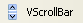 |
让我们运行以下应用程序：
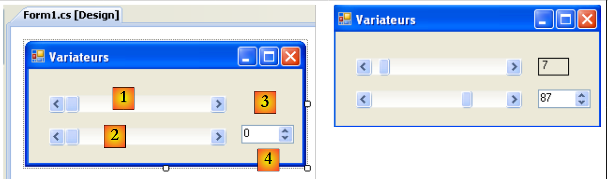 |
编号 | 类型 | 名称 | 角色 |
1 | hScrollBar | hScrollBar1 | 水平滚动条 |
2 | hScrollBar | hScrollBar2 | 一个水平变速器，其变速范围与变速器1一致 |
3 | 标签 | labelValeurHS1 | 显示水平驱动器的数值 |
4 | 数字上下 | numericUpDown2 | 用于设置控制器 2 的数值 |
一个反向滚动条允许用户从一组整数值中选择一个值，这些值由驱动器“带”表示，光标会在该“带”上移动。驱动器的值可通过其 Value 属性获取。
- 对于水平驱动，左端代表范围的最小值，右端代表最大值，光标则代表当前选定的值。对于垂直驱动，上端代表最小值，下端代表最大值。这些值由Minimum和Maximum属性表示，默认值分别为0和100。
- 点击驱动器两端会使数值增加或减少一个增量（正值或负值），具体取决于点击的是哪一端（SmallChange，默认值为 1）。
- 点击光标两侧会使数值增加或减少一个增量（取决于点击的是哪一端），该增量由 LargeChange 属性决定，其默认值为 10。
- 当点击垂直调光器的上端时，其数值会减小。这可能会让普通用户感到意外，因为他们通常期望数值“上升”。通过将 SmallChange 和 LargeChange 属性设置为负值，可以解决这个问题
- 这五个属性（Value、Minimum、Maximum、SmallChange、LargeChange）均可读写。
- 驱动器的主要事件是指示值发生变化的事件：Scroll。
NumericUpDown 组件与该驱动器类似：它也具有 Minimum、Maximum 和 Value 这三个属性，默认值分别为 0、100 和 0。但在此处，Value 会显示在一个作为控件组成部分的输入框中。除非将 ReadOnly 属性设置为 true，否则用户可以自行修改该值。 增量值由 Increment 属性设定，默认值为 1。NumericUpDown 组件的主要事件是用于通知值发生变化的事件：ValueChanged 事件
应用程序代码如下：
using System.Windows.Forms;
namespace Chap5 {
public partial class Form1 : Form {
public Form1() {
InitializeComponent();
// set the characteristics of drive 1
hScrollBar1.Value = 7;
hScrollBar1.Minimum = 1;
hScrollBar1.Maximum = 130;
hScrollBar1.LargeChange = 11;
hScrollBar1.SmallChange = 1;
// drive 2 is given the same characteristics as drive 1
hScrollBar2.Value = hScrollBar1.Value;
hScrollBar2.Minimum = hScrollBar1.Minimum;
hScrollBar2.Maximum = hScrollBar1.Maximum;
hScrollBar2.LargeChange = hScrollBar1.LargeChange;
hScrollBar2.SmallChange = hScrollBar1.SmallChange;
// ditto for the incrementer
numericUpDown2.Value = hScrollBar1.Value;
numericUpDown2.Minimum = hScrollBar1.Minimum;
numericUpDown2.Maximum = hScrollBar1.Maximum;
numericUpDown2.Increment = hScrollBar1.SmallChange;
// the Label is given the value of drive 1
labelValeurHS1.Text = hScrollBar1.Value.ToString();
}
private void hScrollBar1_Scroll(object sender, ScrollEventArgs e) {
// value change on drive 1
// its value is passed on to drive 2 and to the label
hScrollBar2.Value = hScrollBar1.Value;
labelValeurHS1.Text = hScrollBar1.Value.ToString();
}
private void numericUpDown2_ValueChanged(object sender, System.EventArgs e) {
// incrementer has changed value
// set the value of controller 2
hScrollBar2.Value = (int)numericUpDown2.Value;
}
}
}
7.3. 事件 鼠标
在容器中绘图时，了解鼠标的位置非常重要，例如，这样可以在点击时显示一个点。鼠标的移动会在其移动的容器中触发事件。
 |
- [1]：鼠标移过表单或控件时触发的事件
- [2]: 在拖放（Drag'nDrop）过程中发生的事件
鼠标已进入控件的区域 | |
鼠标刚刚离开控件区域 | |
鼠标正在控件区域内移动 | |
按下鼠标左键 | |
释放鼠标左键 | |
用户将对象拖放到控件上 | |
用户通过拖拽对象进入控件区域 | |
用户拖动对象离开控件区域 | |
用户拖动对象经过控件区域 |
以下是一个应用程序，可帮助您了解不同鼠标事件何时发生：
 |
编号 | 类型 | 名称 | 角色 |
1 | 标签 | lblPositionSouris | 用于在表单 1、列表 2 或按钮 3 中显示鼠标位置 |
2 | 列表框 | listBoxEvts | 用于显示除 MouseMove 以外的鼠标事件 |
3 | Button | buttonEffacer | 用于删除 2 的内容 |
为了跟踪这三个控件上的鼠标移动，我们编写一个单一的处理程序，即 poster：
 |
poster 过程的代码如下：
private void affiche(object sender, MouseEventArgs e) {
// mvt mouse - displays its (X,Y) coordinates
labelPositionSouris.Text = "(" + e.X + "," + e.Y + ")";
}
每次鼠标进入控件的区域时，其坐标系都会发生变化。其原点 (0,0) 即为当前所在控件的左上角。因此，在运行时，当你将鼠标从窗体移动到按钮上时， 可以清楚地看到坐标的变化。为了更好地观察鼠标区域内的这些变化，你可以使用 Cursor [1] 控件：
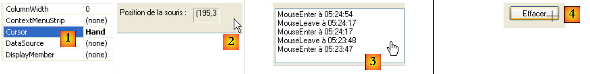 |
此属性用于设置鼠标进入控件区域时的光标形状。在本示例中，我们将表单本身的鼠标光标设置为“默认”[2]，列表 2 的光标设置为“手形”[3]，按钮 3 的光标设置为“十字”[4]。
此外，为了检测鼠标在列表 2 上的进入和离开，我们处理来自该列表的 MouseEnter 和 MouseLeave 事件：
private void listBoxEvts_MouseEnter(object sender, System.EventArgs e) {
// the event
listBoxEvts.Items.Insert(0, string.Format("MouseEnter à {0:hh:mm:ss}",DateTime.Now));
}
private void listBoxEvts_MouseLeave(object sender, EventArgs e) {
// the event
listBoxEvts.Items.Insert(0, string.Format("MouseLeave à {0:hh:mm:ss}", DateTime.Now));
}
为了处理表单上的点击操作，我们处理以下事件：MouseDown 和 MouseUp：
private void listBoxEvts_MouseDown(object sender, MouseEventArgs e) {
// the event
listBoxEvts.Items.Insert(0, string.Format("MouseDown à {0:hh:mm:ss}", DateTime.Now));
}
private void listBoxEvts_MouseUp(object sender, MouseEventArgs e) {
// the event
listBoxEvts.Items.Insert(0, string.Format("MouseUp à {0:hh:mm:ss}", DateTime.Now));
}
- 第 3 行和第 8 行：消息被放置在 ListBox 的首位，以便将最新的事件列在最前面。
 |
最后，是按钮点击处理程序 Delete 的代码：
private void buttonEffacer_Click(object sender, EventArgs e) {
listBoxEvts.Items.Clear();
}
7.4. 创建一个带有菜单的窗口
现在让我们看看如何创建一个带有菜单的窗口。我们将创建以下窗口：
 |
要创建菜单，请在“菜单和工具栏”栏中选择“MenuStrip”：
 |
- [1]：选择组件 [MenuStrip]
- [2]：表单上会出现一个菜单，其中带有标有“在此输入”的空白框。您只需输入各个菜单选项即可。
- [3]：已输入“选项 A”标签。继续输入标签 [4]。
- [5]：选项 A 的标签已输入完毕。继续处理标签 [6]
 |
- [6]：第一个 B 选项
- [7]：在 B1 下方使用了分隔符。该分隔符可在标有“在此输入”的下拉菜单中选择
- [8]：要创建子菜单，请使用箭头 [8]，并在 [9] 中输入子菜单内容
剩下的就是为表单的各个组件命名：
 |
编号 | 编号 | 名词 | 角色 |
1 | 标签 | labelStatut | 用于显示所点击的选项菜单项的文本 |
2 | 工具栏菜单项 | 工具栏菜单项选项A 工具栏菜单项A1 工具栏菜单项A2 工具栏菜单项A3 | “选项 A”主选项下的菜单选项 |
3 | 工具栏菜单项 | 工具栏菜单项选项B 工具栏菜单项B1 工具栏菜单项B2 工具栏菜单项B3 | “选项 B”主选项下的菜单选项 |
4 | 工具栏菜单项 | 工具栏菜单项B31 toolStripMenuItemB32 | 主选项“B3”下的菜单选项 |
菜单选项与其他可视化组件一样，都是控件，具有属性与事件。例如，选项菜单项 A1 的属性如下：
 |
本示例中使用了两个属性：
菜单控件名称 | |
选项菜单的标签 |
在菜单结构中，选择选项 A1 并右键单击以访问控件的属性：
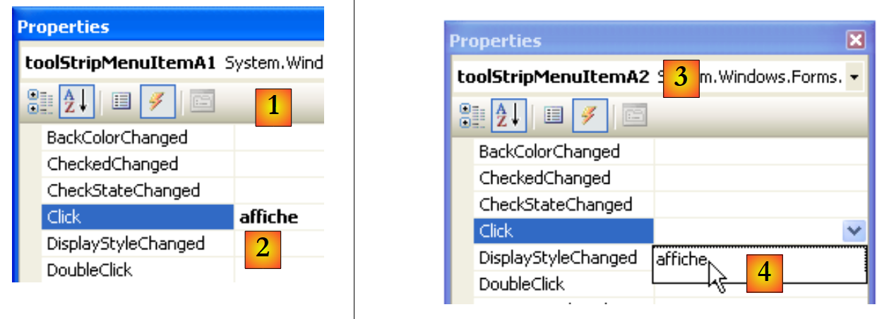 |
在事件 [1] 中，我们将 poster [2] 关联到 Click 事件。这意味着当用户单击选项 A1 时，将由名为 poster 的方法进行处理。Visual Studio 会在代码窗口中自动生成 poster：
private void affiche(object sender, EventArgs e) {
}
在此方法中，我们将简单地在 labelStatut 标签中显示被点击的菜单选项的 Text 属性：
private void affiche(object sender, EventArgs e) {
// displays the name of the selected submenu in the TextBox
labelStatut.Text = ((ToolStripMenuItem)sender).Text;
}
事件发送者的类型源是 object。菜单选项是 ToolStripMenuItem，因此我们必须将 object 转换为 ToolStripMenuItem。
对于所有菜单选项，我们将点击处理程序设置为方法 poster [3,4]。
现在运行应用程序并选择一个菜单项：
 |  |
7.5. 非视觉组件
现在我们将关注一些非视觉组件：它们在设计阶段会被用到，但在运行时不可见。
7.5.1. 对话框 OpenFileDialog 和 SaveFileDialog
我们将构建以下应用程序：
 |
控件如下：
编号 | 类型 | 名称 | 作用 |
1 | 文本框 | 文本框行数 | 用户输入的文本或从文件加载的文本 MultiLine=True, ScrollBars=Both, AccepReturn=True, AcceptTab=True |
2 | Button | buttonSauvegarder | 将 [1] 中的文本保存到文本文件中 |
3 | 按钮 | buttonCharger | 将文本文件的内容加载到 [1] 中 |
4 | 按钮 | buttonEffacer | 删除 [1] 的内容 |
5 | SaveFileDialog | saveFileDialog1 | 用于选择 [1] 备份文件的名称和位置的组件。该组件取自工具栏 [7]，并直接放置在表单上。随后它会被保存，但不会占用表单上的任何空间。这是一个非可视化组件。 |
6 | OpenFileDialog | openFileDialog1 | 组件，用于选择要加载到 [1] 中的文件。 |
与“删除”相关的代码很简单：
private void buttonEffacer_Click(object sender, EventArgs e) {
// we put the empty string in the TexBox
textBoxLignes.Text = "";
}
我们将使用 SaveFileDialog 的以下属性和方法：
字段 | 类型 | 作用 |
属性 | 在 | |
属性 | 上述列表中默认显示的文件类型的序号。从 0 开始。 | |
属性 | 最初用于保存文件的文件夹 | |
属性 | 用户指定的备份文件名 | |
方法 | 显示“保存”对话框的方法。返回 DialogResult 类型的结果。 |
ShowDialog 方法会显示一个类似下图的对话框：
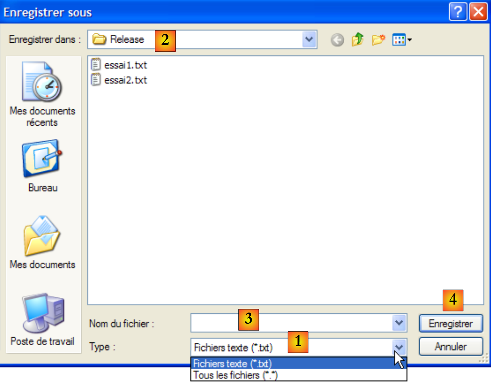 |
由 Filter 构建的下拉列表。默认文件类型由 FilterIndex 设定 | |
当前文件，若 InitialDirectory 属性已设置，则由其决定 | |
用户选择或直接输入的文件名。该名称将显示在 FileName 字段中 | |
按钮“保存/取消”中可用。若使用注册表，则 ShowDialog 会将结果设置为 DialogResult.OK |
保护程序可编写如下：
private void buttonSauvegarder_Click(object sender, System.EventArgs e) {
// save the input box in a text file
// set the savefileDialog1 dialog box
saveFileDialog1.InitialDirectory = Application.ExecutablePath;
saveFileDialog1.Filter = "Fichiers texte (*.txt)|*.txt|Tous les fichiers (*.*)|*.*";
saveFileDialog1.FilterIndex = 0;
// display the dialog box and retrieve the result
if (saveFileDialog1.ShowDialog() == DialogResult.OK) {
// retrieve the file name
string nomFichier = saveFileDialog1.FileName;
StreamWriter fichier = null;
try {
// open the file for writing
fichier = new StreamWriter(nomFichier);
// we write the text inside
fichier.Write(textBoxLignes.Text);
} catch (Exception ex) {
// problem
MessageBox.Show("Problème à l'écriture du fichier (" +
ex.Message + ")", "Erreur", MessageBoxButtons.OK, MessageBoxIcon.Error);
return;
} finally {
// close the file
if (fichier != null) {
fichier.Dispose();
}
}
}
}
- 第 4 行：将初始文件（InitialDirectory）设置为包含应用程序可执行文件的文件（Application.ExecutablePath）。
- 第 5 行：设置要显示的文件类型。请注意过滤器语法：filter1|filter2|..|filtren，其中 filteri= Text|file 模式。在此，用户可以在 *.txt 和 *.* 文件之间进行选择。
- 第 6 行：设置首先向用户展示的文件类型。此处索引 0 表示 *.txt 文件。
- 第 8 行：显示对话框并获取其结果。对话框显示期间，用户无法访问主窗体（模态对话框）。 用户设置待保存文件的名称，并通过点击“确定”、点击“取消”或直接关闭对话框来退出。只有当用户使用“确定”退出对话框时，ShowDialog 的结果才会是 DialogResult.OK。
- 完成上述操作后，待创建文件的名称现已存储在 FileName 对象 saveFileDialog1 中。这将我们带回经典的文本文件创建流程。TextBox 的内容为：textBoxLignes.Text，同时需处理可能发生的任何异常。
OpenFileDialog 类与 SaveFileDialog 非常相似。我们将使用与上述相同的属性和方法。ShowDialog 方法会显示一个类似于下图的对话框：
 |
由 Filter 构建的下拉列表。默认文件类型由 FilterIndex 设定 | |
当前文件，若已设置 InitialDirectory 属性，则由该属性决定 | |
用户选择或直接输入的文件名。该名称将显示在 FileName 中 | |
按钮“打开”/“取消”。若使用“打开”按钮，ShowDialog 会将结果设置为 DialogResult.OK |
加载文本文件的程序可编写如下：
private void buttonCharger_Click(object sender, EventArgs e) {
// load a text file into the input box
// set the openfileDialog1 dialog box
openFileDialog1.InitialDirectory = Application.ExecutablePath;
openFileDialog1.Filter = "Fichiers texte (*.txt)|*.txt|Tous les fichiers (*.*)|*.*";
openFileDialog1.FilterIndex = 0;
// display the dialog box and retrieve the result
if (openFileDialog1.ShowDialog() == DialogResult.OK) {
//
string nomFichier = openFileDialog1.FileName;
StreamReader fichier = null;
try {
// retrieve the file name
fichier = new StreamReader(nomFichier);
// open the file in read mode
textBoxLignes.Text = fichier.ReadToEnd();
} catch (Exception ex) {
// read the entire file and put it in the TextBox
MessageBox.Show("Problème à la lecture du fichier (" +
ex.Message + ")", "Erreur", MessageBoxButtons.OK, MessageBoxIcon.Error);
return;
} finally {
// problem
if (fichier != null) {
fichier.Dispose();
}
}// close the file
}//finally
}
- 第 4 行：将初始文件 (InitialDirectory) 设置为包含应用程序可执行文件的文件 (Application.ExecutablePath)。
- 第 5 行：设置要显示的文件类型。请注意过滤器语法：filter1|filter2|..|filtren，其中 filteri = 文本|文件模式。在此，用户可以在 *.txt 和 *.* 文件之间进行选择。
- 第 6 行：设置首先向用户展示的文件类型。此处索引 0 表示 *.txt 文件。
- 第 8 行：显示对话框并获取其结果。对话框显示期间，用户无法访问主窗体（模态对话框）。 用户设置待保存文件的名称，并通过点击“打开”按钮、点击“取消”按钮或直接关闭对话框来退出对话框。只有当用户使用“确定”退出对话框时，ShowDialog 的结果才会是 DialogResult.OK。
- 完成上述操作后，待创建文件的名称现已存储在 openFileDialog1 的 FileName 对象中。这将我们带回经典的文本文件读取过程。请注意第 16 行中读取整个文件的方法。
7.5.2. FontColor 和 ColorDialog 对话框
我们延续前面的示例，添加两个新按钮和两个新的非视觉控件：
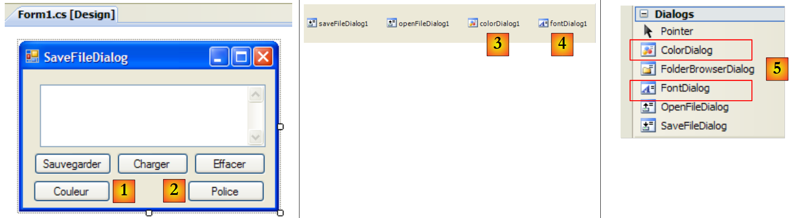 |
67
编号 | 编号 | 名称 | 角色 |
1 | 按钮 | buttonCouleur | 用于设置文本框的字符颜色 |
2 | 按钮 | buttonPolice | 用于设置 TextBox 的字体 |
3 | ColorDialog | colorDialog1 | 用于选择颜色的组件——取自工具箱 [5]。 |
4 | FontDialog | colorDialog1 | 字体选择组件——取自工具箱 [5]。 |
FontDialog 和 ColorDialog 类具有一个名为 ShowDialog 的方法，该方法与 OpenFileDialog 和 SaveFileDialog 类中的 ShowDialog 方法类似。
 |
ColorDialog 类的 ShowDialog 方法用于选择颜色 [1]。FontDialog 类的 ShowDialog 方法用于选择字体 [2]：
- [1]：如果用户通过“确定”按钮关闭对话框，则 ShowDialog 方法的结果为 DialogResult.OK，且所选颜色存储在 ColorDialog 类所使用的 Color 对象中。
- [2]：如果用户通过“确定”按钮关闭对话框，则 ShowDialog 方法的结果为 DialogResult.OK，所选字体保存在所使用的 FontDialog 对象中。
现在我们已具备处理“颜色”和“字体”按钮点击所需的元素：
private void buttonCouleur_Click(object sender, EventArgs e) {//if
if (colorDialog1.ShowDialog() == DialogResult.OK) {
// choice of text color
textBoxLignes.ForeColor = colorDialog1.Color;
}// change the Forecolor property of TextBox
}
private void buttonPolice_Click(object sender, EventArgs e) {
//if
if (fontDialog1.ShowDialog() == DialogResult.OK) {
// font selection
textBoxLignes.Font = fontDialog1.Font;
}
- 第 [4] 行：TextBox 组件的 [ForeColor] 属性指定了 TextBox 中字符的 [Color] 类型颜色。此处，该颜色即用户在 [ColorDialog] 对话框中选择的颜色。
- 第 [12] 行：TextBox 组件的 [Font] 属性指定 TextBox 中字符的 [Font] 字体。此处该字体即用户在 [FontDialog] 对话框中选择的字体。
7.5.3. Timer
在此，我们建议编写以下应用程序：
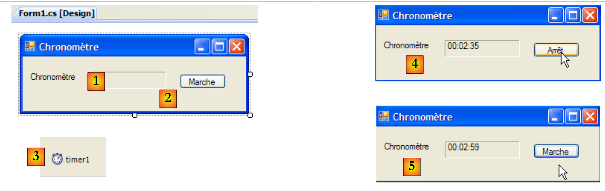 |
编号 | 类型 | 名称 | 角色 |
1 | 标签 | labelChrono | 显示一个秒表 |
2 | 按钮 | buttonArretMarche | 停止/开始按钮 |
3 | 定时器 | timer1 | 该组件每秒触发一次事件 |
在 [4] 中，我们看到秒表正在运行；在 [5] 中，秒表已停止。
为了每秒更新 LabelChrono 的标签内容，我们需要一个每秒生成一次事件的组件，我们可以拦截该事件来更新秒表的显示。该组件即工具箱 [2] 中提供的 Timer [1]：
 |
此处使用的 Timer 组件的属性如下：
发出Tick事件所需的毫秒数。 | |
在 Interval 毫秒结束时触发的事件 | |
使计时器处于活动状态（true）或非活动状态（false） |
在本例中，计时器名为 timer1，且 timer1.Interval 设置为 1000 毫秒（1 秒）。因此，Tick 事件将每秒触发一次。点击“停止/开始”按钮将由以下 buttonArretMarche_Click 过程处理：
using System;
using System.Windows.Forms;
namespace Chap5 {
public partial class Form1 : Form {
public Form1() {
InitializeComponent();
}
// change the Font property of TextBox
private DateTime début = DateTime.Now;
...
private void buttonArretMarche_Click(object sender, EventArgs e) {
// variable instance
if (buttonArretMarche.Text == "Marche") {
// off or on?
début = DateTime.Now;
// we note the start time
labelChrono.Text = "00:00:00";
// we display it
timer1.Enabled = true;
// start timer
buttonArretMarche.Text = "Arrêt";
// change the button label
return;
}// end
if (buttonArretMarche.Text == "Arrêt") {
// timer off
timer1.Enabled = false;
// change the button label
buttonArretMarche.Text = "Marche";
// end
return;
}
}
}
}
- 第 13 行：处理“开/关”按钮点击事件的程序。
- 第 15 行：停止/开始按钮的标签可能是“停止”或“开始”。因此，我们需要检测该标签以确定后续操作。
- 第 17 行：若标签显示为“Marche”，则将开始时间记录在全局变量 start 中（第 11 行），该变量属于 form 对象
- 第19行：初始化标签内容 LabelChrono
- 第 21 行：启动计时器（Enabled=true）
- 第 23 行：按钮标签更改为“停止”。
- 第 27 行：在“Arrêt”（停止）的情况下
- 第 29 行：计时器停止（Enabled=false）
- 第 31 行：将按钮标签更改为“On”。
我们还需要处理对象 timer1 上的 Tick 事件，该事件每秒触发一次：
private void timer1_Tick(object sender, EventArgs e) {
// a second has passed
DateTime maintenant = DateTime.Now;
TimeSpan durée = maintenant - début;
// update the stopwatch
labelChrono.Text = durée.Hours.ToString("d2") + ":" + durée.Minutes.ToString("d2") + ":" + durée.Seconds.ToString("d2");
}
- 第 3 行：记录当前时间
- 第 4 行：计算自秒表开始时间以来的经过时间。结果是一个 TimeSpan 类型的对象，表示时间间隔。
- 第 6 行：必须以 hh:mm:ss 的格式在秒表中显示该时间。为此，我们使用代表时长中小时、分钟和秒的 TimeSpan 对象，并通过 ToString("d2") 格式显示为两位数。
7.6. 应用示例 - 版本 6
我们以示例应用程序 IMPOTS 为例。第 6.4 节中研究了该程序的最新版本。这是一个由以下三个部分组成的应用程序：
 |
- [metier] 和 [dao] 层封装在 DLL 中
- [ui] 层是一个 [console] 层
- 层的实例化和集成到应用程序中由 Spring 负责。
在新版本中，[ui] 层将由以下图形界面提供：
 |
7.6.1. Visual Studio 解决方案
Visual Studio 解决方案由以下组件组成：
 |
- [1]：该项目包含以下元素：
- [Program.cs]：启动应用程序的类
- [Form1.cs]：第一个窗体类
- [Form2]：第二个窗体的类
- [lib] 详见 [2]：已包含项目所需的所有 DLL：
- [ImpotsV5-dao.dll]：第 6.4.3 节中生成的 [dao] 层 DLL；
- [ImpotsV5-metier.dll]：第 6.4.4 节中生成的 [dao] 层 DLL；
- [Spring.Core.dll]、[Common.Logging.dll]、[antlr.runtime.dll]：上一版本中已使用的 Spring DLL（参见第 6.4.6 节）。
- [引用] 详见 [3]：项目引用。已在 [lib] 文件中为每个 DLL 添加了引用
- [App.config]：项目配置文件。其内容与第 6.4.6 节所述的上一版本完全一致；
- [DataImport.txt]：税率档位文件，已配置为自动复制到项目运行目录 [4]
窗体 [Form1] 是用于输入上文已介绍的税费计算参数 [A] 的窗体。窗体 [Form2] [B] 用于显示错误消息：
 |
7.6.2. [类 Program.cs]
[Program.cs] 类用于启动应用程序。其代码如下：
using System;
using System.Windows.Forms;
using Spring.Context;
using Spring.Context.Support;
using Metier;
using System.Text;
namespace Chap5 {
static class Program {
/// <summary>
/// The main entry point for the application.
/// </summary>
[STAThread]
static void Main() {
// code generated by Vs
Application.EnableVisualStyles();
Application.SetCompatibleTextRenderingDefault(false);
// --------------- Developer code
// instantiations [metier] and [dao] layers
IApplicationContext ctx = null;
Exception ex = null;
IImpotMetier metier = null;
try {
// spring context
ctx = ContextRegistry.GetContext();
// a reference is requested on the [metier] layer
metier = (IImpotMetier)ctx.GetObject("metier");
} catch (Exception e1) {
// memory exception
ex = e1;
}
// form to display
Form form = null;
// was there an exception?
if (ex != null) {
// yes - create the error message to be displayed
StringBuilder msgErreur = new StringBuilder(String.Format("Chaîne des exceptions : {0}{1}", "".PadLeft(40, '-'), Environment.NewLine));
Exception e = ex;
while (e != null) {
msgErreur.Append(String.Format("{0}: {1}{2}", e.GetType().FullName, e.Message, Environment.NewLine));
msgErreur.Append(String.Format("{0}{1}", "".PadLeft(40, '-'), Environment.NewLine));
e = e.InnerException;
}
// creation of an error window to which the error message to be displayed is passed
Form2 form2 = new Form2();
form2.MsgErreur = msgErreur.ToString();
// this will be the window to display
form = form2;
} else {
// all went well
// creation of a graphical interface [Form1] to which we pass the reference on the [metier] layer
Form1 form1 = new Form1();
form1.Metier = metier;
// this will be the window to display
form = form1;
}
// window display
Application.Run(form);
}
}
}
Visual Studio 生成的代码已从第 19 行开始完成。该应用程序使用 [ App.config] 文件，内容如下：
<?xml version="1.0" encoding="utf-8" ?>
<configuration>
<configSections>
<sectionGroup name="spring">
<section name="context" type="Spring.Context.Support.ContextHandler, Spring.Core" />
<section name="objects" type="Spring.Context.Support.DefaultSectionHandler, Spring.Core" />
</sectionGroup>
</configSections>
<spring>
<context>
<resource uri="config://spring/objects" />
</context>
<objects xmlns="http://www.springframework.net">
<object name="dao" type="Dao.FileImpot, ImpotsV5-dao">
<constructor-arg index="0" value="DataImpot.txt"/>
</object>
<object name="metier" type="Metier.ImpotMetier, ImpotsV5-metier">
<constructor-arg index="0" ref="dao"/>
</object>
</objects>
</spring>
</configuration>
- 第 24-32 行：使用之前的 [App.config] 文件来实例化 [metier] 和 [dao] 层
- 第 26 行：使用 [App.config] 文件
- 第 28 行：从 [metier] 层获取引用
- 第 31 行：记录异常
- 第 34 行：引用表单将指定要显示的表单（form1 或 form2）
- 第 36-50 行：如果已抛出异常，则准备显示类型为 [Form2] 的表单
- 第 38-44 行：创建待显示的错误消息。该消息由异常链中各异常的错误消息拼接而成。
- 第 46 行：创建一个类型为 [Form2] 的表单。
- 第 47 行：如后文将看到，该表单是一个名为 MsgErreur 的公共属性，即待显示的错误消息：
public string MsgErreur { private get; set; }
该属性被赋值。
- 第 49 行：初始化了指定要显示的窗口的引用 Form。请注意此处的多态性。form2 并非 [Form] 类型，而是 [Form2] 类型，后者是从 [Form] 派生出来的类型。
- 第 50-57 行：未抛出异常。我们正在准备显示一个类型为 [Form1] 的窗体。
- 第 53 行：创建了一个类型为 [Form1] 的表单。
- 第 54 行：正如我们稍后将看到的，该表单是公共属性 Trade，它是指向 [metier] 层的引用：
public IImpotMetier Metier { private get; set; }
该属性被赋值。
- 第 56 行：初始化了指定要显示的窗口的引用 form。这里再次体现了多态性。form1 的类型不是 [Form]，而是 [Form1]，后者是从 [Form] 派生出来的类型。
- 第 59 行：显示由 form 引用的窗口。
7.6.3. [Form1] 表单
在 [设计] 模式下，[Form1] 表单如下所示：
 |
控件如下所示
编号 | 类型 | 名称 | 角色 |
0 | 组框 | groupBox1 | 文本=您已婚吗 |
1 | 单选按钮 | radioButton是 | 已婚时选中 |
2 | 单选按钮 | radioButtonNon | 若未婚则选中 已选中=True |
3 | 数字上下滑块 | numericUpDownEnfants | 子女数量 最小值=0，最大值=20，增量=1 |
4 | 文本框 | textSalaire | 纳税人的年薪（单位：欧元） |
5 | 标签 | labelImpot | 应缴税额 边框样式=Fixed3D |
6 | 按钮 | buttonCalculate | 启动税款计算 |
7 | 按钮 | 按钮删除 | 将表单恢复到加载时的状态 |
8 | 按钮 | buttonExit | 用于退出应用程序 |
表单操作规则
- 只要工资字段为空，"计算"按钮将保持不可用
- 如果在运行计算时发现工资有误，则会报告错误 [9]
类代码如下：
using System.Windows.Forms;
using Metier;
using System;
namespace Chap5 {
public partial class Form1 : Form {
// business] layer
public IImpotMetier Metier { private get; set; }
public Form1() {
InitializeComponent();
}
private void buttonCalculer_Click(object sender, System.EventArgs e) {
// is the salary correct?
int salaire;
bool ok=int.TryParse(textSalaire.Text.Trim(), out salaire);
if (! ok || salaire < 0) {
// error msg
MessageBox.Show("Salaire incorrect", "Erreur de saisie", MessageBoxButtons.OK, MessageBoxIcon.Error);
// back to the wrong field
textSalaire.Focus();
// select text for input field
textSalaire.SelectAll();
// back to input interface
return;
}
// salary is correct - tax can be calculated
labelImpot.Text = Metier.CalculerImpot(radioButtonOui.Checked, (int)numericUpDownEnfants.Value, salaire).ToString();
}
private void buttonQuitter_Click(object sender, System.EventArgs e) {
Environment.Exit(0);
}
private void buttonEffacer_Click(object sender, System.EventArgs e) {
// raz form
labelImpot.Text = "";
numericUpDownEnfants.Value = 0;
textSalaire.Text = "";
radioButtonNon.Checked = true;
}
private void textSalaire_TextChanged(object sender, EventArgs e) {
// calculate] button status
buttonCalculer.Enabled=textSalaire.Text.Trim()!="";
}
}
}
我们仅对重要部分进行注释：
- 第 [8] 行：公共属性 Trade，允许启动类 [Program.cs] 将 [metier] 层的引用注入到 [Form1] 中。
- 第 [14] 行：税费计算过程
- 第 15-27 行：检查工资的有效性（整数 >= 0）。
- 第 29 行：使用 [metier] 层的 [CalculerImpot] 方法计算税额。请注意，通过将 [metier] 层封装在 DLL 中，实现了这一操作的简洁性。
7.6.4. [表单 Form2]
在 [设计] 模式下，[Form2] 表单如下所示：
 |
控件如下所示
编号 | 类型 | 名称 | 角色 |
1 | 文本框 | 错误文本框 | 多行=True，滚动条=两端 |
类代码如下：
using System.Windows.Forms;
namespace Chap5 {
public partial class Form2 : Form {
// error msg
public string MsgErreur { private get; set; }
public Form2() {
InitializeComponent();
}
private void Form2_Load(object sender, System.EventArgs e) {
// error msg is displayed
textBoxErreur.Text = MsgErreur;
// deselect all text
textBoxErreur.Select(0, 0);
}
}
}
- 第 6 行：public 属性 MsgErreur，允许启动类 [Program.cs] 将要显示的错误消息注入到 [Form2] 中。该消息在 Load 方法（第 12-16 行）执行时显示。
- 第 14 行：将错误消息放入 TextBox
- 第 16 行：清除前一步操作中选中的内容。[TextBox].Select(début, longueur) 表示从起始字符位置开始，选中 (高亮显示) 长度为 longueur 的字符。[TextBox].Select(0, 0) 相当于取消选中所有文本。
7.6.5. 结论
让我们回顾一下所使用的三层架构：
 |
这种架构使我们能够用图形化实现替换现有的[ui]层，而无需更改[metier]和[dao]层。我们能够专注于[ui]层，无需担心对其他层可能产生的影响。这就是三层架构的主要优势。 稍后我们将看到另一个示例：当前使用文本文件数据的 [dao] 层将被替换为使用数据库数据的 [dao] 层。正如我们将看到的，这不会对 [ui] 和 [metier] 层产生任何影响。